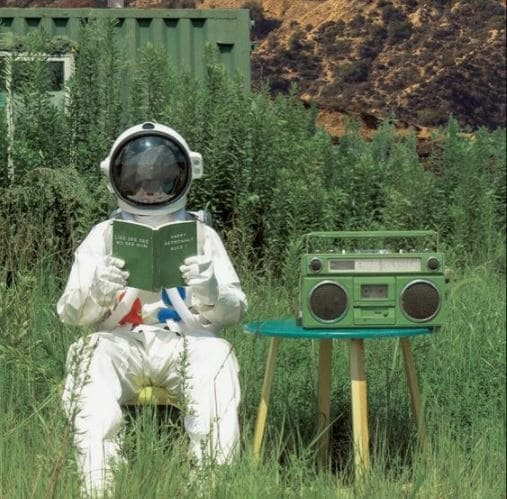
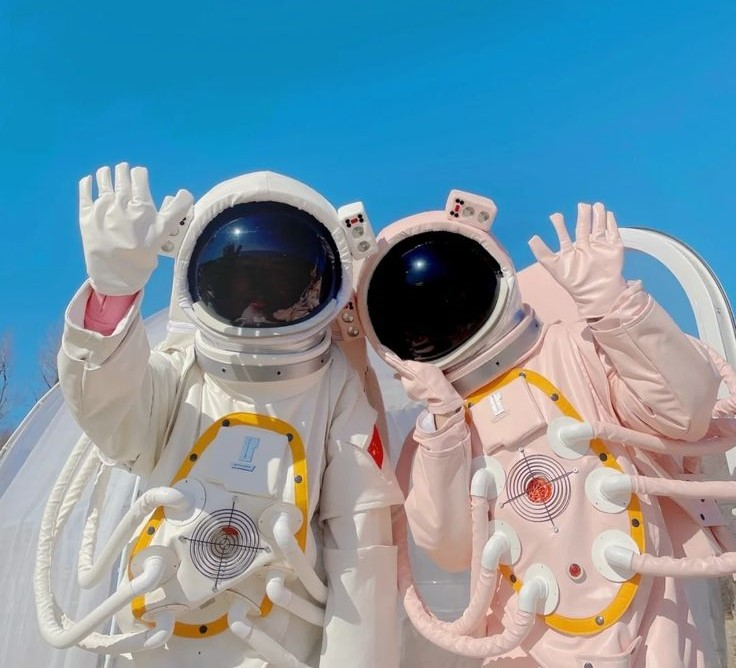

Acerca de Cloud-9
con hack de lectura rápida ;)
La Diversidad de Objetos Curados
Cloud-9 se distingue por su diversidad de objetos curados, que van desde pinturas y esculturas hasta elementos más inusuales como instaciones de realidad virtual y arte digital. La galería abarca tanto las formas de arte clásicas como las emergentes, ofreciendo a los visitantes una experiencia que desafía las convenciones y expande los límites de la creatividad. La Tecnología Como Aliada de la Curaduría
La integración de tecnologías emergentes, como la realidad aumentada y la inteligencia artificial, en la curaduría de Cloud-9 añade capas de complejidad y profundidad a la experiencia del espectador. Estas tecnologías permiten una interacción más inmersiva con las obras de arte, transformando la pasividad de la observación en una participación activa y personalizada.
El Futuro de la Experiencia Artística
En conclusión, Cloud-9 representa una evolución significativa en la forma en que experimentamos y apreciamos el arte y los objetos estéticos. Su enfoque en la curaduría de objetos en la nube abre nuevas posibilidades para la creatividad y la expresión artística en el siglo digital. Cloud-9 es un faro que señala hacia el futuro de la aprecfiación del arte, donde la imaginación y la tecnología convergen para crear un viaje de arte al ciberespacio